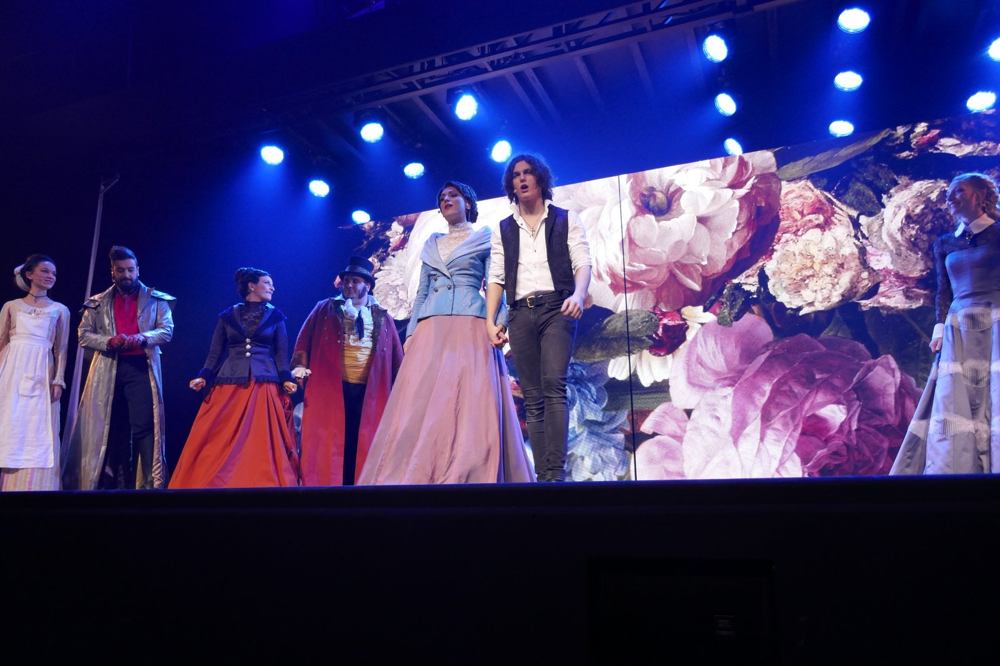
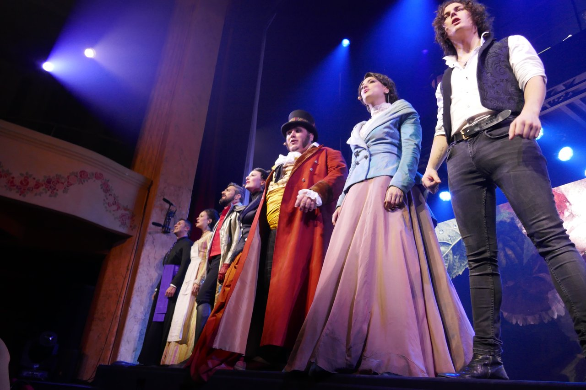
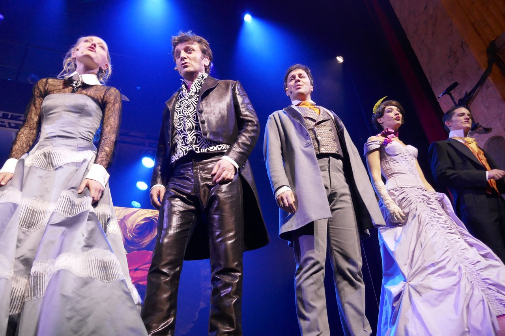

MUSICAL / 音乐剧
LE ROUGE ET LE NOIR — L'OPERA ROCK
司汤达笔下 1830 年代的阶级牢笼，被法式摇滚撕开一道血红裂口。木匠之子于连怀揣着对荣耀与爱情的执念，在红（热血、军装、革命）与黑（教袍、阴谋、死亡）之间冲撞，最终走向断头台。
于连·索雷尔出身贫寒，却精通拉丁文、野心勃勃。在波旁王朝复辟的压抑年代，他渴望以「红」（拿破仑式的军功与热血）或「黑」（教会的权谋）爬上社会顶层。
成为维里埃市长家的家庭教师后，他与市长夫人露易丝·德瑞那陷入禁忌之恋。私情败露，他被迫离开，进入神学院，后又成为巴黎拉莫尔侯爵的秘书，并赢得侯爵千金玛蒂尔德的芳心。就在他即将跻身贵族之时，教会迫使德瑞那夫人写信揭发于连；于连在愤怒中开枪打伤德瑞那夫人，最终被送上断头台。
La gloire à mes genoux, l'amour au creux des mains.
— 取自名曲《La gloire à mes genoux》：荣耀向我俯首，爱情握于掌心，道出了于连一生的执念与覆灭。
作曲核心，参与过《摇滚莫扎特》《1789，巴士底狱的恋人》等法式摇滚音乐剧。
作曲，19 岁时因司汤达主人公而改名 Sorel；本剧所有 demo 均出自他手。
作词，法国著名唱作人，为 Florent Pagny、Johnny Hallyday 等写过大量作品。
作词，与 William Rousseau 多次合作，擅长将文学意象转化为摇滚歌词。
编剧，将司汤达厚重的小说压缩成戏剧张力十足的舞台文本。
联合导演，以红黑两极的视觉语言统摄全剧。
| 角色 | 简介 | 巴黎首演 |
|---|---|---|
| Julien Sorel 于连·索雷尔 | 木匠之子，野心与爱情交织的悲剧主角 | Côme |
| Louise de Rênal 露易丝·德瑞那 | 维里埃市长夫人，于连的初恋，压抑中燃烧的自由灵魂 | Haylen |
| Mathilde de La Mole 玛蒂尔德·德·拉莫尔 | 拉莫尔侯爵千金，骄傲而热烈的爱人 | Julie Fournier |
| Gérard de Rênal 德瑞那先生 | 维里埃市长，于连与露易丝之间的障碍 | Michel Lerousseau |
| Le Marquis de La Mole 拉莫尔侯爵 | 巴黎贵族，于连跻身上流的跳板 | Patrice Maktav |
| Élisa / 其他 | 市长家女仆等配角 | Elsa Pérusin / Cynthia Tolleron |



以下按剧情分组列出 ACT I / ACT II，幕次划分以叙事推进为参考；现场演出版本可能略有调整。
| ACT I — 维里埃、德瑞那之恋与神学院 | ||
|---|---|---|
| 曲名 | 演唱角色 | 情境 |
| La gloire à mes genoux | Julien | 于连的野心宣言：「荣耀向我俯首」 |
| Les maudits mots d'amour | Mme de Rênal / Julien | 被诅咒的情话，禁忌之恋的开端 |
| Écouter son cœur | Mme de Rênal | 露易丝倾听内心的渴望 |
| Dans le noir je vois rouge | Julien | 黑暗中于连看见红色的命运 |
| Ding Dong | 全员 | 命运叩门，情节转折的节点 |
| Quel ennui | 贵族群像 | 对上流社会空虚的讽刺 |
| Que c'est bon d'être un bourgeois | bourgeois 群像 | 布尔乔亚的得意与虚伪 |
| Tout se perd | Julien / Mme de Rênal | 一切在失去，情感与身份的崩塌 |
| ACT II — 巴黎、侯爵府与悲剧 | ||
|---|---|---|
| 曲名 | 演唱角色 | 情境 |
| Sans elles | Julien | 失去两位女性后，于连的独白 |
| Il aurait suffi | Mme de Rênal | 露易丝的悔恨：「本就足够了」 |
| Pour qu'elles nous aiment | Julien / 男性角色 | 为了被爱，男人做出的抉择 |
| Éviter les roses | Mathilde | 玛蒂尔德避开玫瑰，选择骄傲 |
| Ces peines perdues | Mme de Rênal | 徒劳的痛楚与告别 |
| Je vous laisse hélas | 全员 | 终曲：于连走向结局，众人告别 |
司汤达长篇小说《红与黑》首次出版。
法语摇滚音乐剧《摇滚红与黑》于巴黎宫殿戏院首演。
获水晶球奖（Globes de Cristal）最佳音乐剧提名。
2019 中国巡演上海站率先开票。
首次中国巡演，推动法剧在国内的二次传播。
在法国及海外持续复排，Côme、Haylen 等原卡演员成为法剧标志性面孔。
法语音乐剧界重要奖项，本剧作为新作成即获认可。
被赞为品质保证的法式摇滚歌剧。
Côme、Haylen 等原班阵容来华，推动法红黑成为法剧圈热门曲目。
专辑与现场视频在 Bilibili、YouTube 等平台积累了大量观众。